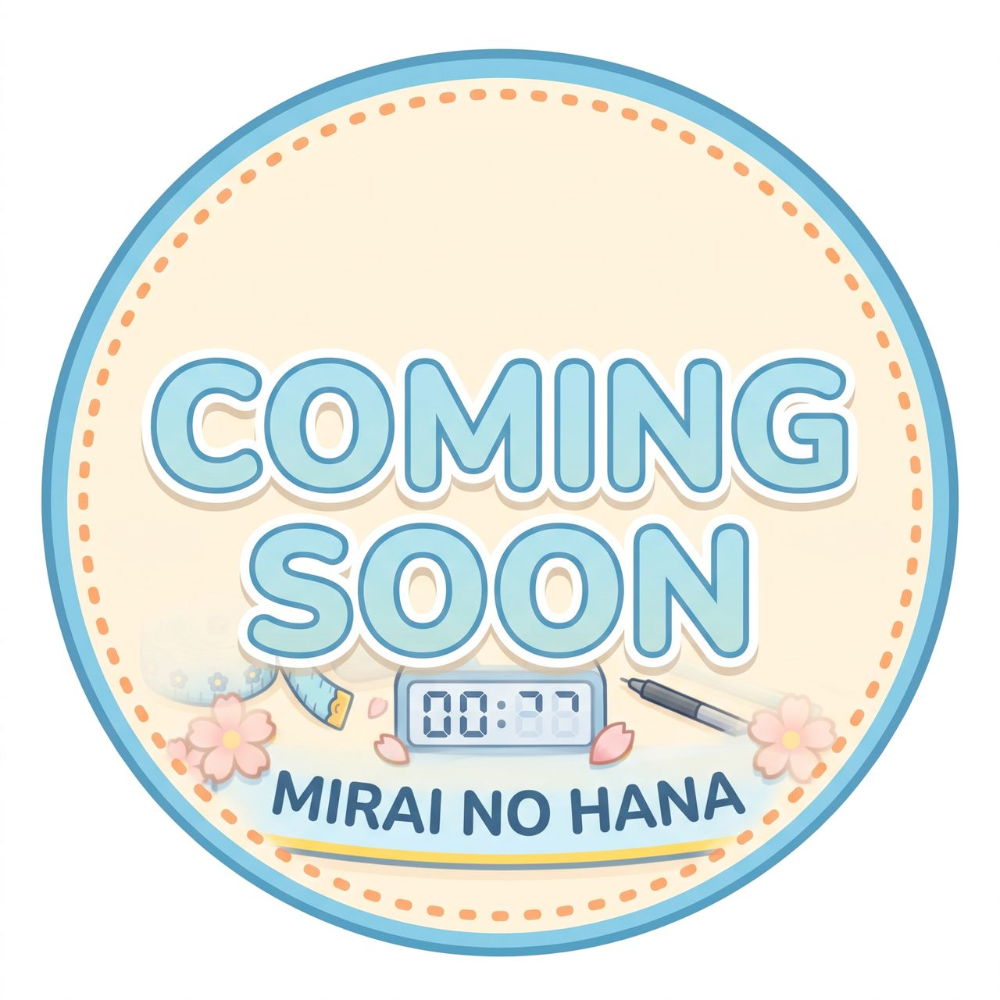
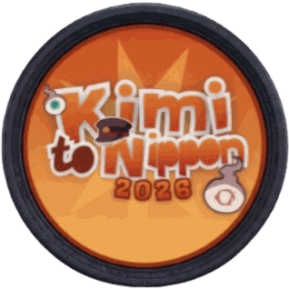
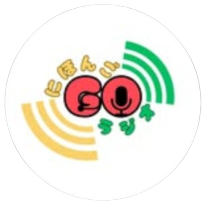
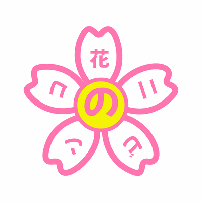
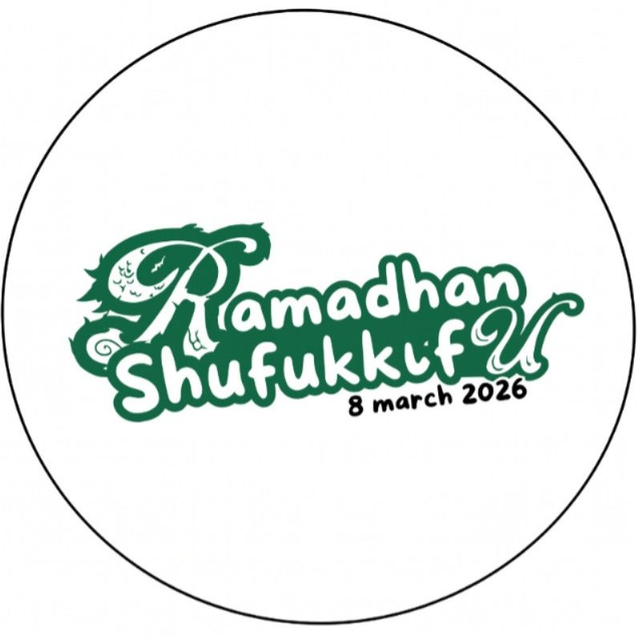

Divisi 1
Divisi Bahasa
Membina pembelajaran bahasa Jepang, pemahaman huruf kana, kanji, tata bahasa, dan simulasi kaiwa interaktif.
Lihat Lebih Lanjut →
Divisi 1
Membina pembelajaran bahasa Jepang, pemahaman huruf kana, kanji, tata bahasa, dan simulasi kaiwa interaktif.
Lihat Lebih Lanjut →Divisi 2
Mewadahi ekspresi seni peran karakter anime dan manga, workshop makeup, wig styling, dan kreasi properti panggung.
Lihat Lebih Lanjut →Divisi 3
Mengembangkan identitas visual, grafis media sosial, ilustrasi maskot Sora, serta desain merchandise resmi klub.
Lihat Lebih Lanjut →Divisi 4
Mengembangkan kemandirian finansial klub lewat stan kuliner Mirai no Konbini dan proyek bisnis kreatif saat festival.
Lihat Lebih Lanjut →
Program Kerja 1
Kegiatan orientasi seru dan interaktif untuk menyambut serta mengenalkan klub kepada anggota baru.
Lihat Lebih Lanjut →
Program Kerja 2
Program siaran radio sekolah peneman jam istirahat dengan obrolan Jejepangan dan titipan lagu seru.
Lihat Lebih Lanjut →
Program Kerja 3
Proyek kewirausahaan kreatif untuk menambah kas klub melalui penjualan produk saat event sekolah.
Lihat Lebih Lanjut →
Program Kerja 4
Aksi sosial dan kepedulian berbagi takjil kepada masyarakat sekitar SMASYIMDUTA di bulan suci.
Lihat Lebih Lanjut →Program Kerja 5
Program kemitraan, persahabatan, dan kolaborasi interaktif dengan komunitas jejepangan luar untuk mempererat relasi budaya.
Lihat Lebih Lanjut →SARANA & PRASARANA KLUB
Dukungan sarana kelas fisik representatif di lingkungan sekolah serta infrastruktur digital modern guna menunjang kenyamanan belajar, kreativitas divisi, dan eksplorasi kebudayaan Jepang.
Memanfaatkan sarana ruang kelas resmi sekolah yang bersih, kondusif, dan berdaya tampung optimal untuk menunjang kegiatan belajar tatap muka, lokakarya divisi, serta rapat internal.
Kapasitas penuh tertata rapi untuk belajar aktif
Media tayang materi visual & slide presentasi
Pemutaran video edukasi & konten budaya
Whiteboard & penghapus untuk latihan aksara
Menjaga sirkulasi udara tetap sejuk & nyaman
Stopkontak untuk operasional laptop & gawai
Portal edukasi mandiri terintegrasi yang menyajikan modul aksara, kurikulum berjenjang, ensiklopedia karakter kanji, serta pusat transparansi informasi kegiatan resmi klub.
Materi Hiragana & Katakana lengkap audio
Animasi goresan KanjiVG & kategori level JLPT
Uji pemahaman aksara dengan skor instan
Asisten AI cerdas konsultasi materi & klub
Transparansi poin radio & presensi anggota
Informasi lomba, kurikulum, & rekomendasi
Koleksi sarana peraga dan perlengkapan identitas yang dikelola oleh divisi untuk menunjang performa festival budaya, siaran radio sekolah, bazar, dan kegiatan kepengurusan.
Pakaian tradisional resmi delegasi festival
Mikrofon & perlengkapan Nihon Go Rajio
Aksesoris, styling kit, & perlengkapan panggung
Peralatan display stan Mirai no Konbini
Atribut resmi pengenal anggota & pengurus
Peraga promosi & dekorasi stand ekstrakurikuler